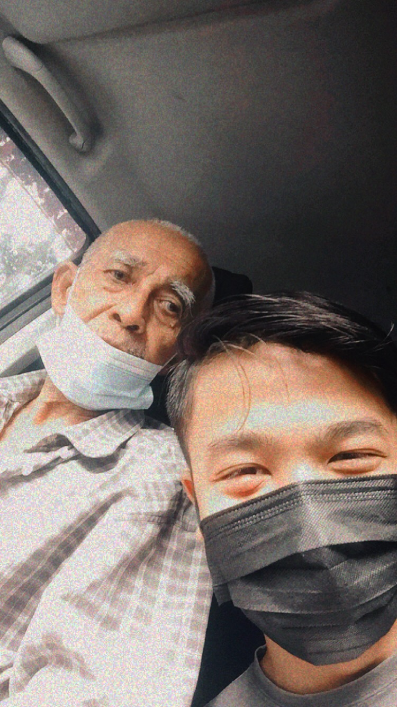

My 2021 teach me a lots of things . It is like a tough ride on a roller – coaster that we cannot easily predict . This year has exhaust my well being whether it is physical and mental . However it is , I know that there is a blessing behind all of this .
As Allah said “ Allah does not burden a soul beyond it can bear ”
( Surah Al – Baqarah ; 286 )

The day when I lost my grandparents who been infected by Covid – 19 . I never thought that my own family will be infected by this virus . My grandparents is very close to me and my sister . I been living in Penang with him for almost 20 years as my house and grandparents house is very near . I called him as “ Wan ” and he is 84 years old . He is one of my role model in this life . This is because , he always taught us to be kind to each other , give a treats to family members and people around us , emphasize “ sadaqah ” , pray and many more .
I still remember the last day I came to my grandparents house where he is a good condition and healthy even though he is not as strong as past due to age factors . On that time is rainy . However , I still decided to went home because I want to meet my friends at his house . On the next day , I got a called from my grandparents telling that one of my family ( Paksu ) who live together with my grandparents is close contact with positive people . So all of them need to stay at home and quarantine themselves .
14 September 2021 about 6 a.m , my father got a called from my family telling that my “ Wan ” cannot be saved anymore . He is in a stage 4 covid – 19 . The doctor cannot do anything or intubate because it will be risky due to the age factors and many more . I accept this fate because everything happen for a reason . It’s not easy to adapt that people that we loved are not here anymore .
I learnt that death is inevitable . It can be happen anytime and anywhere according to Allah . Also , I learnt that to love , cherish and appreciate people surround us as tomorrow is not a guarantee . It is not worth it for us to hate each other or sever the relationship that we build . Furthermore , we need to prepare ourselves because We belong to Allah and to Him we shall return .
Please , take care of yourself . Follow the SOP that been made by the government . Get vacinnated . Here i provide some useful link that are important for our current situation .